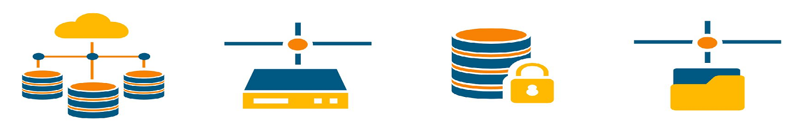
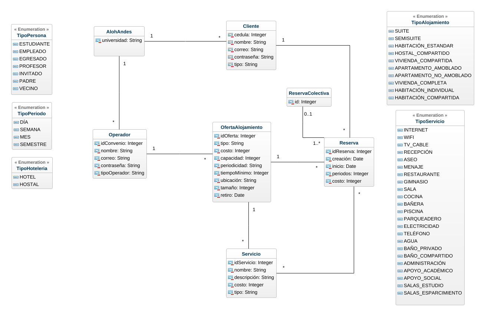

What it does
The application exposes menu-driven operations defined in interfaceConfigApp.json for creating operators, offers, clients, and reservations, plus analytical queries such as incomes, popular offers, occupancy, availability, and customer usage analysis.
Its implementation is split across Swing UI (interfazApp), business layer (negocio), and SQL persistence classes (persistencia).
Demo / Screenshots


Getting started
docker run -d --name oracle-db \
-p 1521:1521 \
-p 5500:5500 \
-e ORACLE_PWD=adminpassword \
container-registry.oracle.com/database/express:latestcd Alohandes
javac -cp "lib/*" -encoding UTF-8 -d bin $(find src -name "*.java")
java -cp "bin:lib/*:src/main/resources" uniandes.isis2304.alohandes.interfazApp.InterfazAlohandesAppDatabase connection settings are in Alohandes/src/main/resources/META-INF/persistence.xml.
Project structure
Alohandes/
src/main/java/uniandes/isis2304/alohandes/
interfazApp/ # Swing UI and menu actions
negocio/ # Business facade and domain entities
persistencia/ # SQL and persistence operations
src/main/resources/
META-INF/persistence.xml
config/interfaceConfigApp.json
lib/ # bundled dependencies
data/ # SQL and sample data assets
Proyecto/ # iteration deliverables
Talleres/ # workshop deliverablesLicense
No license file is currently present in this repository. Until one is added, usage rights are not explicitly granted in the repository.